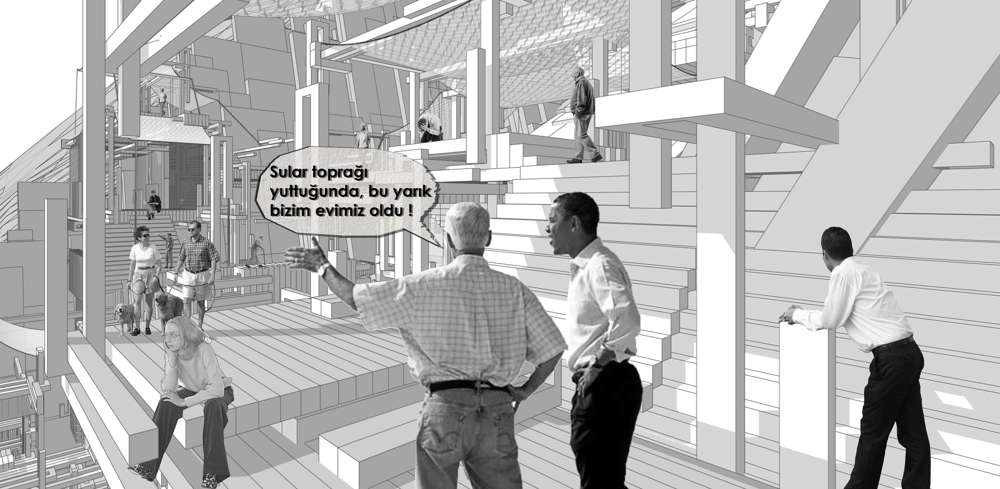
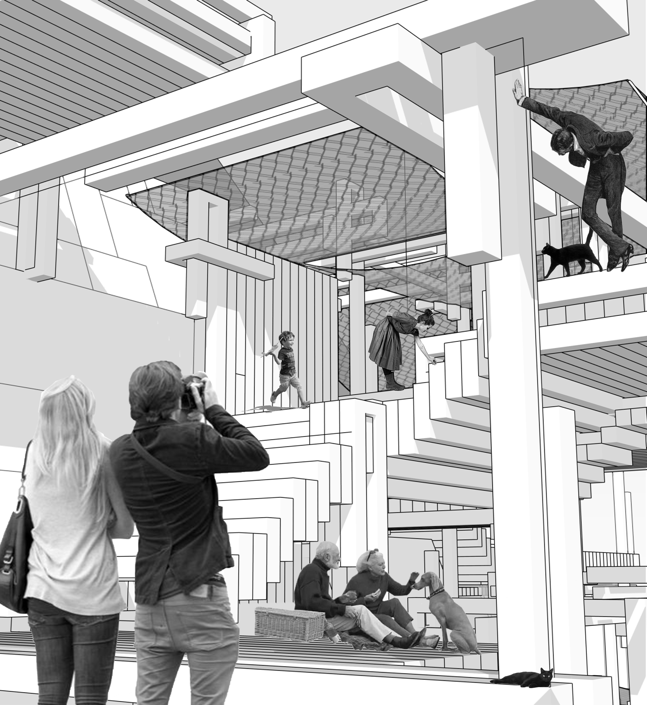
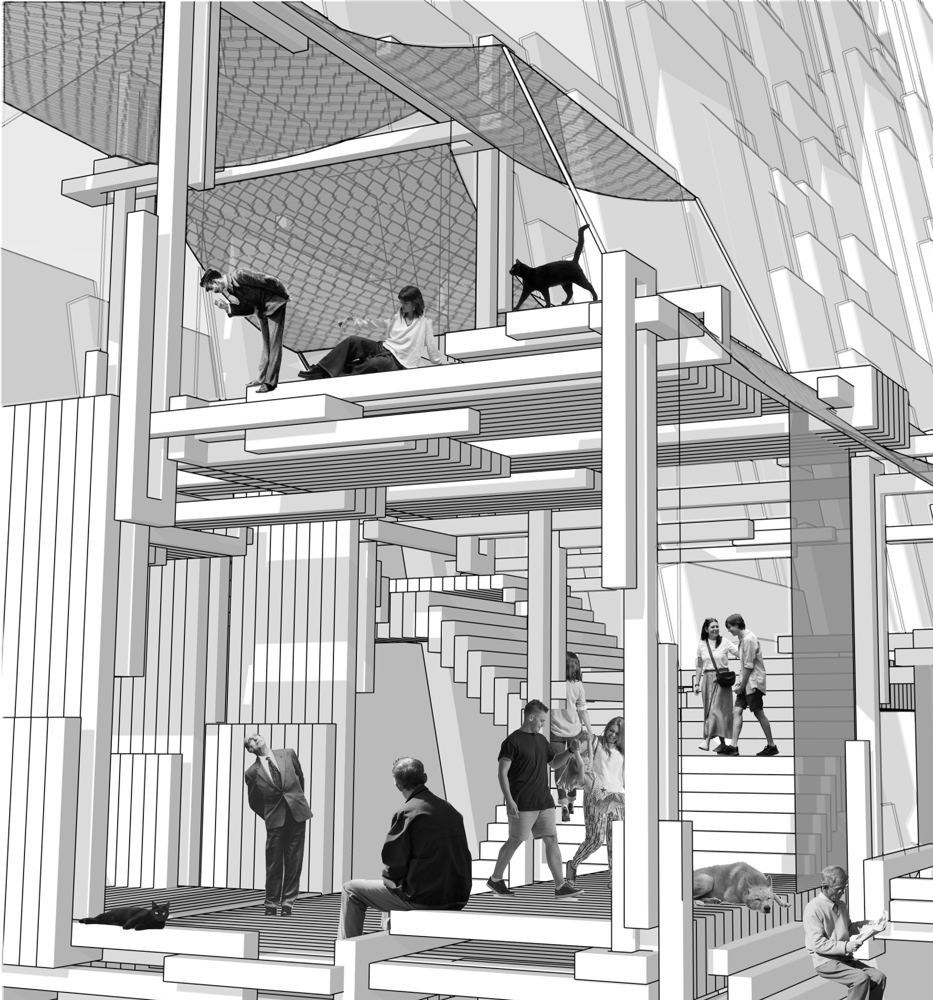
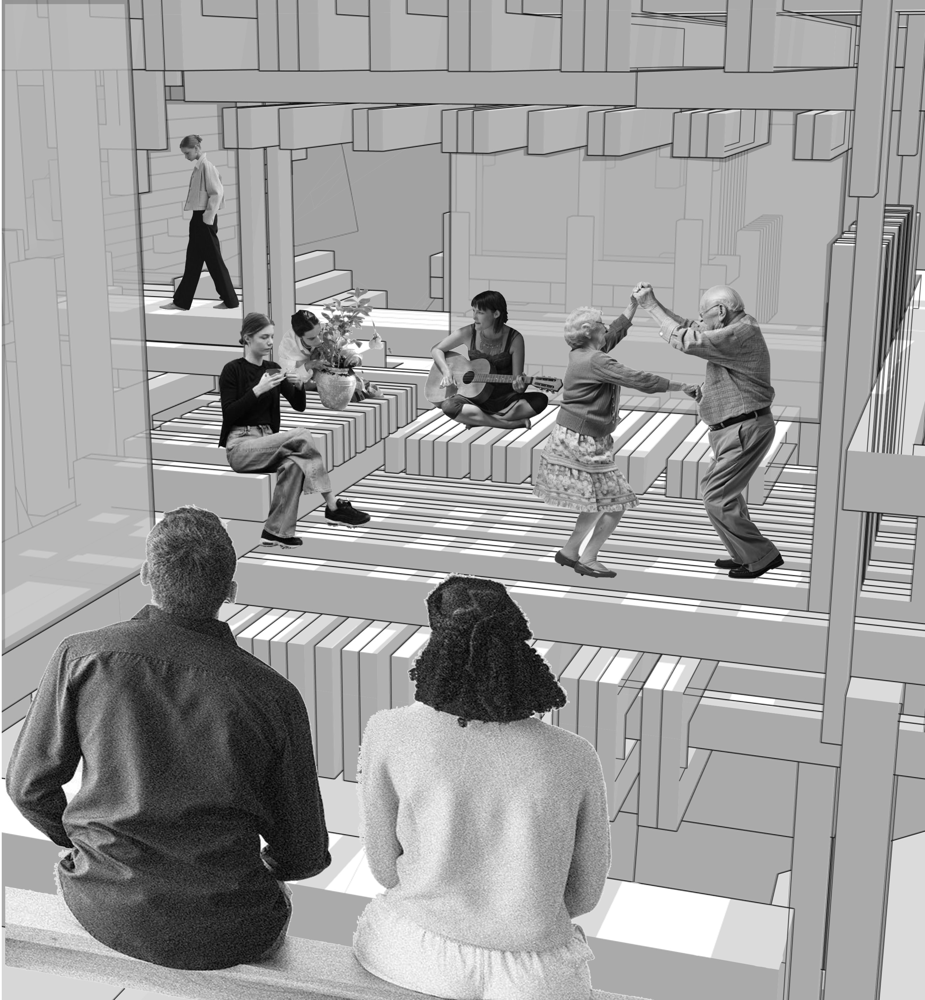

Adaptive Living: A Future Shaped by Water and Landscape
Adaptif Yaşam: Su ve Peyzaj Tarafından Şekillenen Bir Gelecek
This project explores a future where rising lake levels transform existing settlements and redefine the relationship between people, water, and the landscape. Instead of resisting environmental change, the proposal embraces adaptation as a design opportunity, creating a resilient settlement that evolves with its surroundings.
Bu proje, yükselen göl seviyelerinin mevcut yerleşimleri dönüştürdüğü; insan, su ve peyzaj arasındaki ilişkinin yeniden tanımlandığı bir geleceği araştırıyor. Çevresel değişime direnmek yerine adaptasyonu bir tasarım fırsatı olarak benimseyen bu öneri, çevresiyle birlikte evrilen dirençli bir yerleşim yaratıyor.
Organized through a layered terrace system, the settlement follows the natural topography while responding to changing water conditions. A continuous spatial network connects housing, public spaces, and ecological landscapes across different elevations, allowing the community to grow and transform together with the environment.
Katmanlı bir teras sistemi ile kurgulanan yerleşim, doğal topografyayı izlerken değişen su koşullarına uyum sağlar. Kesintisiz bir mekansal ağ; konutları, kamusal alanları ve ekolojik peyzajları farklı kotlarda birbirine bağlayarak topluluğun çevreyle birlikte büyümesine ve dönüşmesine olanak tanır.
Through integrated water management strategies, green corridors, and landscape-based infrastructure, the project proposes a new model of habitation where architecture and nature coexist. It presents a vision of future living that adapts, rather than opposes, the realities of a changing climate.
Entegre su yönetimi stratejileri, yeşil koridorlar ve peyzaj tabanlı altyapı aracılığıyla proje, mimari ve doğanın bir arada var olduğu yeni bir yaşama modeli önermektedir. Değişen iklimin gerçeklerine karşı çıkmak yerine ona adapte olan bir geleceğin yaşam vizyonunu sunar.



